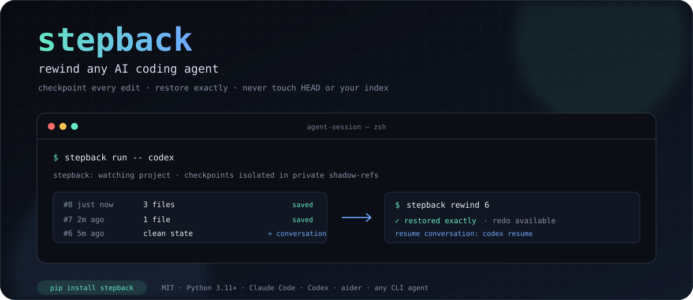
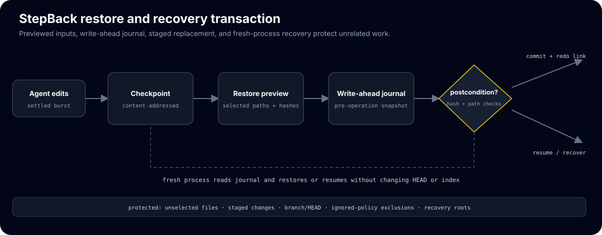

Checkpoint and rewind any AI coding agent session
Git time-travel for AI coding agents. Wrap Claude Code, Codex, aider, or any command; StepBack checkpoints every settled edit burst and rewinds the working tree exactly—with best-effort conversation rewind—without touching your branch, HEAD, index, staging area, or commit history.
pip install stepback # or, from source: pip install . # for development (tests, ruff, mypy): pip install -e ".[dev]"
01
Evidence
| Tests passing (Linux) | 86 passed, 1 platform-gated skip |
|---|---|
| Tests passing (Windows) | 85 passed, 2 skipped |
| Lint and types | ruff + mypy clean on Linux, macOS, and Windows targets |
| CI matrix | 3 OS x 2 Pythons, plus ruff and dual-target mypy |
| Conversation adapters | 2 best-effort (Claude Code, Codex); others file-only |
| Dependencies | 2 runtime deps (typer, watchdog); Python 3.11+ |
| Exit codes | 0 / 1 / 2 / 127, one-line errors, no tracebacks on expected failures |
02
Media

03
Install & verify
# dev install, then lint, types, tests (86 passed, 1 skip on Linux)
pip install -e ".[dev]"
ruff check .
mypy
pytest -q
04
Limits
What this release does not claim (from the release notes):
- Nothing GPU-gated: StepBack is a pure developer tool with no hardware-dependent paths.